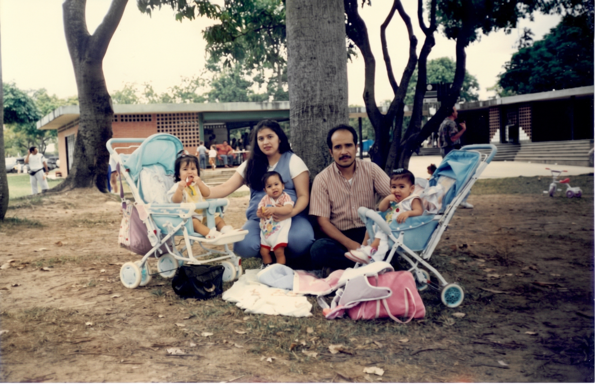
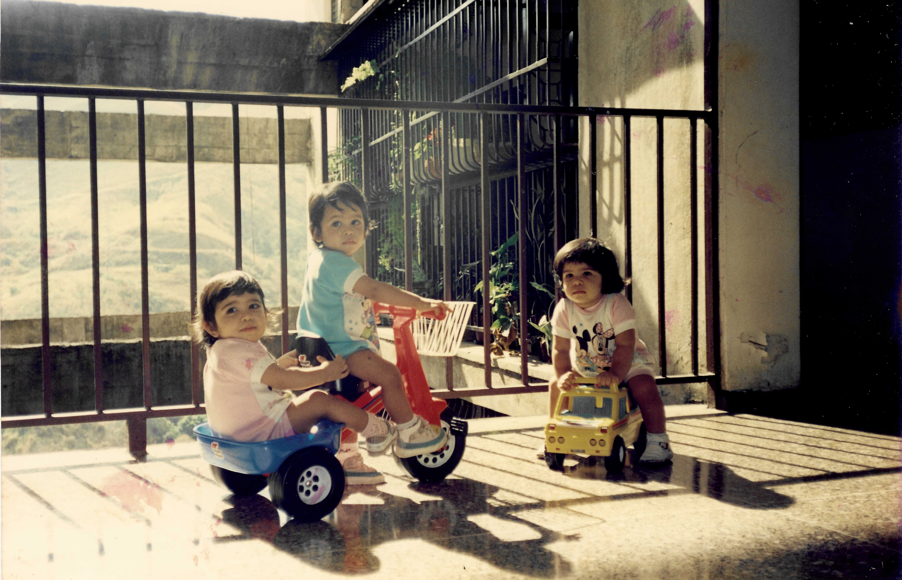

Tres Vidas, Una Misma Raíz
El museo de nuestras anécdotas, risas y secretos familiares. Haz clic o toca cada fotografía para descubrir lo que mamá y papá recuerdan de ese instante.
Historias Detrás de la Foto
Gira las tarjetas tocando sobre ellas

Hito 01La Llegada al Mundo
Aquel Día en el Parque
"Las salidas de casa ya no eran simples paseos, eran auténticas aventuras de logística y paciencia. Segundos antes de esta foto, entre risas y pequeños reclamos, los tres se expresaron al mismo tiempo como un coro perfectamente sincronizado que detuvo el tiempo. ! Mamá y Papá !sentados allí, en medio de cochecitos, bolsos y la naturaleza, contemplamos a nuestros tres pequeños y supimos que el mundo estaba lleno de cosas hermosas, con el corazón lleno, que nuestras vida se habían multiplicado por tres de la forma más hermosa, activa y bendecida que jamás imaginamos."

Hito 02La Gran Travesura en el pasillo
El Complot Infantil
"El silencio en el balcón siempre me hacía sospechar. Al salir, nos encontramos con esta escena: se habían apoderado del pasillo con sus vehículos. Dos de ellos ya iban a bordo del triciclo listos para 'escapar', mientras la tercera, sobre su camioncito amarillo, parecía vigilar el territorio. En cuanto nos vieron con la cámara, detuvieron su caravana y se quedaron congelados, regalándonos esa mirada de complicidad e inocencia que decía: 'Nosotros no estábamos haciendo nada"
Nuevos Caminos y Metas
Creciendo con Carácter
"Nacieron juntos, crecieron codo a codo y hoy los vemos convertidos en profesionales extraordinarios. Cada uno eligió su rumbo y consolidó su pasión —entre la tecnología, el mercadeo, los estudios estadísticos y sus grandes metas—, brillando cada uno con luz propia. Saber que los tres han alcanzado sus sueños con tanta dedicación llena los corazones de papá y mamá de un amor infinito; este logro de ustedes es la mayor bendición de nuestras vidas"
La Carta de Mamá para sus 33
"33 años siendo testigo de cómo un amor multiplicado por tres creció hasta convertirse en tres personas maravillosas. ¡Feliz cumpleaños, mis tesoros!"